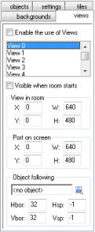

When you click the tab labeled views the following information will show:

At the top there is a box labeled Enable the use of Views. You must check this box to use views. Below this you see the list of at most eight views you can define. Below the list you can give information for the views. First of all you must indicate whether the view should be visible when the room starts. Make sure at least one view is visible. Visible views are shown in bold.
A view is defined by a rectangular area in the room. This is the area that must be shown in the view. You specify the position of the top-left corner and the width and height of this area. Secondly, you must specify where this area is shown in the window on the screen. This is called the (view)port. Again you specify the position of the top-left corner and the size. If you have a single view the position is typically (0,0). Note that the size of the port can be different from the size of the view. In this case the view will be scaled to fit in the port. (In code it is also possible to rotate a view.) The ports can overlap. In this case the are drawn in the indicated order on top of each other.
As indicated above, you often want the view to follow a certain object. This object you can indicate at the bottom. If there are multiple instances of this object, only the first one is followed by the view. (In code you can also indicate that a particular instance must be followed.) Normally the character should be able to walk around a bit without the view changing. Only when the character gets close to the boundary of the view, should the view change. You can specify the size of the border that must remain visible around the object. Finally, you can restrict the speed with which the view changes. This might mean that the character can walk off the screen, but it gives a much smoother game play. Use -1 if you want the view to change instantaneously.